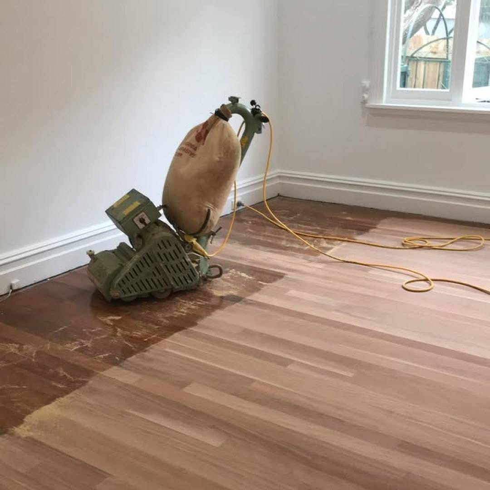

Floor sanding
Full sanding of timber floors — removing old finishes, scratches and wear to bring the raw timber back.
Services
From single rooms to whole homes — sanding, polishing and finishing done properly, with dust kept to a minimum.
Full sanding of timber floors — removing old finishes, scratches and wear to bring the raw timber back.
Premium polish and finish coats that protect the timber and bring out its natural grain and warmth.
Bringing tired, damaged or painted floors back to their original character — repairs, gap filling and full refinish.
Installation and finishing of new timber flooring — laid, sanded and polished for a seamless result.
Our process
Every job follows the same disciplined process — the reason our finishes last.
01
We inspect the floor, identify the timber type, wear and any repairs needed before quoting.
02
Furniture moved, edges protected and the work area set up with dust control in place.
03
Progressive sanding passes take the floor back evenly — no swirl marks, no missed corners.
04
Polishing and protective coats applied in a controlled sequence for depth and durability.
05
Final inspection with you, care instructions, and a floor that's ready to live on.
Why Babylon
Fifteen years of timber floors across Newcastle and the Hunter — the finish shows it.
Modern sanding and containment keep your home liveable while the work happens.
We match the finish to the timber and the room — so it looks right and wears well.
Newcastle based. You deal with the people doing the work, start to finish.

A freshly restored floor — sanded, polished and finished by Babylon Floor Sanding.
Service areas
Free measure and quote — send a few photos through the form below for a fast estimate.